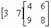
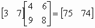
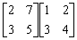

二階矩陣乘法
程式編寫日期: 2008年3月13日
程式可以計算一個1 × 2矩陣和一個2 × 2矩陣的乘積，重複使用亦可以計算一個n × 2矩陣和一個2 × 2矩陣的乘積(n為正整數)。
| 0 | X | Y | A | B | + | X | A |
| + | Y | C | ) | cos | sin-1 | K | + |
| K | X | B | + | K | Y | D | - |
| cos | sin-1 | K | + | cos | sin-1 | K | STO F1 |
例題1: 計算以下二階矩陣的乘積。

按 2ndF DEL (必要) 再按 RCL F1 ALGB 3 = 7 = 4 = 6 = 9 = 8 = (顯示75) = (顯示74)
所以

例題2: 計算以下二階矩陣的乘積。

按 2ndF DEL (必要) 再按 RCL F1 ALGB 2 = 7 = 1 = 2 = 3 = 4 (顯示23) = (顯示32)
再按 ALGB 3 = 5 = = = = = (顯示18) = (顯示26)
所以

註: 在顯示第二個答案後(32)，若不小心多按 = ，會再次顯示之前的答案，要注意在顯示第二個答案32後，要直接 ALGB 進行下一個計算，否則答案的顯示次序會出現錯誤。